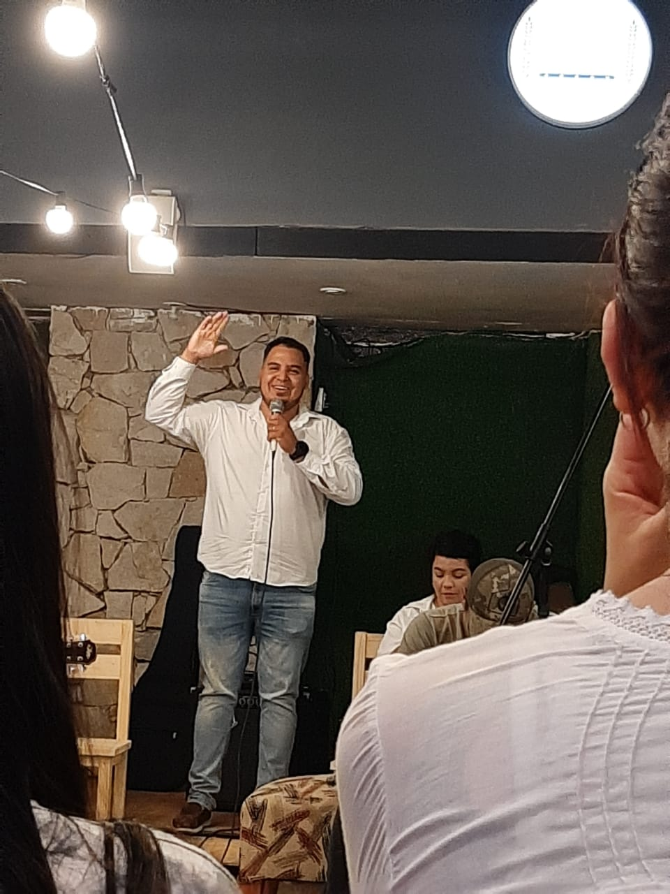
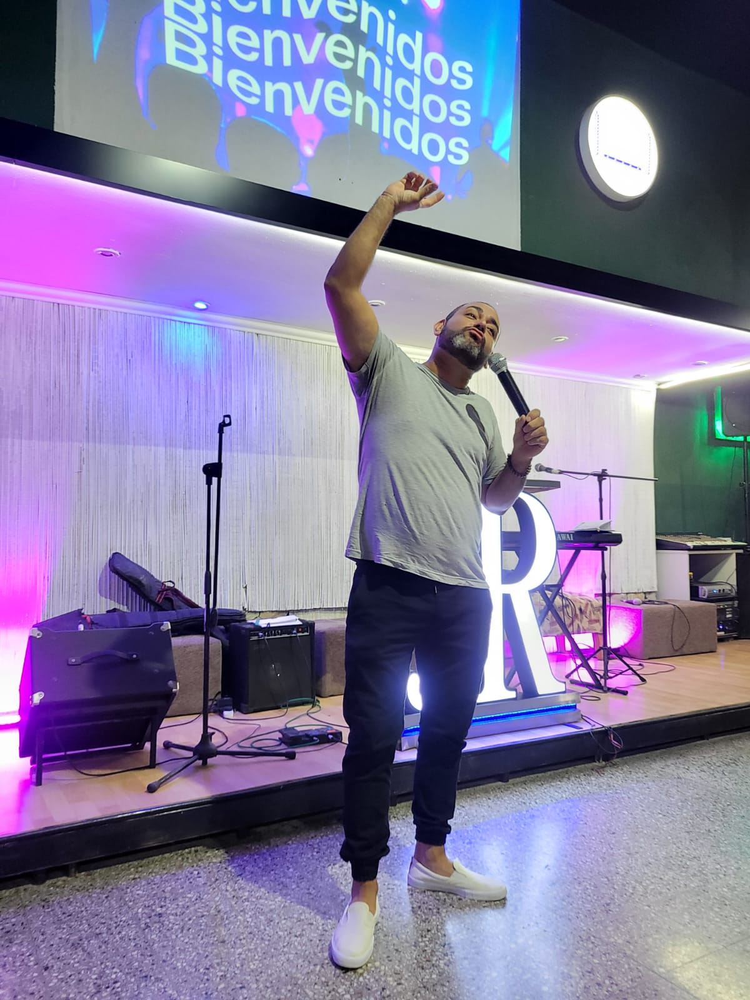
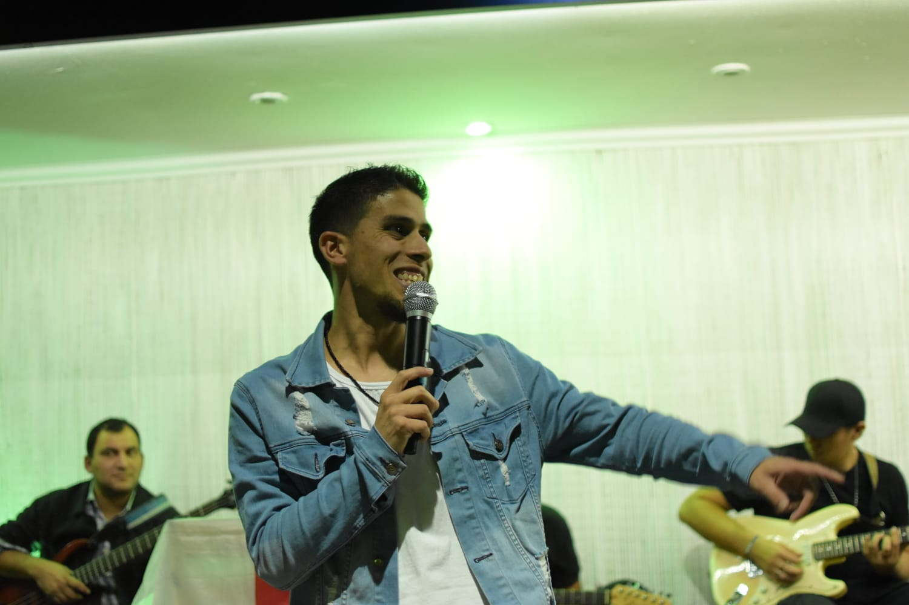

Nosotros
"Desde el momento en que se fundó nuestro ministerio, nos hemos enfocado en la revelación profética. Como visión, sabemos que tenemos la obligación de difundir la Palabra de Dios en todos los ámbitos, pero nuestra base es la misericordia, que es el significado de RAJEM. Nos guiamos por la humildad, la paz,la MISERICORDIA, el ayudar, el acompañar y el compartir, buscando ser una bendición para los demás y cuidando a aquellos que caminan a nuestro lado. Tenemos una visión amplia con objetivos claros, siempre caminando de la mano de Dios y buscando hacer Su voluntad en todo momento."
- Profeta Pablo Naigles, Padre espiritual de la casa.
Pastor Pablo Naigles, Profeta y Padre espiritual de la casa. Es prueba viva de la misericordia de Dios, y es un hombre que verdaderamente posee la fé que un hijo de Dios necesita.
Pastor Diego Pino, Hijo espiritual de Rajem y uno de los organizadores de uno de los eventos mas conocidos en el ámbito: Jovenes Para Jesús.
Pastor Raul Firmapaz, Hijo Espiritual de Rajem y es lider de alabanza junto a su esposa. Su amor por Dios lo mueve en la mayoria de sus movimientos.
Jony Ayala, Hijo de la casa y representante Argentino en REVIVAL, una persona talentosa para las obras de teatro y para la tecnologia.